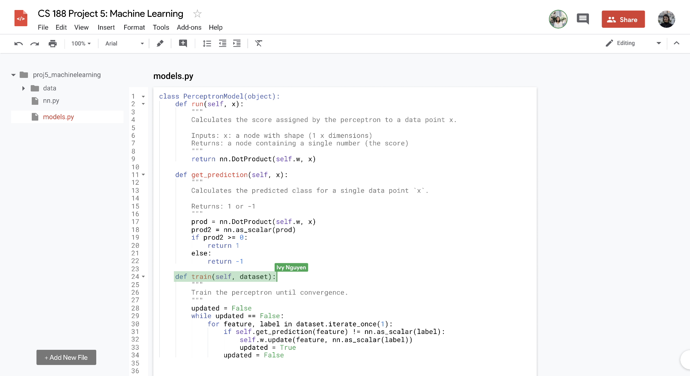
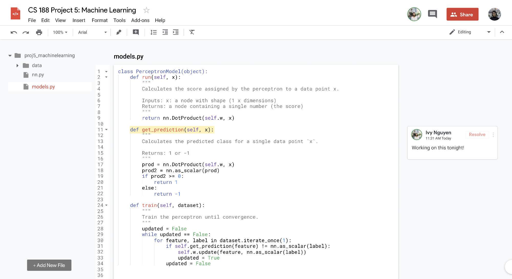

Google Editor
Imagining a Google Drive collaborative code editor
Team: Sona Dolasia, Ivy Nguyen
Timeline: April - May 2019
Deliverables: Figma Prototypes, User Research Report, Competitive Analysis

Google Editor
Imagining a Google Drive collaborative code editor
Team: Sona Dolasia, Ivy Nguyen
Timeline: April - May 2019
Deliverables: Figma Prototypes, User Research Report, Competitive Analysis
context
As project partners in CS 188, Ivy and I had trouble working collaboratively and simultaniously understanding the material equally.
After attempting to use Google Docs, we started imagining what a collaborative code editor might look like if it was a part of the Google Drive suite.
research
We began by brainstorming a list of features we wanted in a collaborative code editor, and then compared it with exisiting products.
 (view full image)
(view full image)
We then compiled a question guide and interviewed both students and educators to learn more about the role of collaboration in CS eduacation.
insights
These were some students (left) and professors' (right) insights when we questioned them about the value of collaboration in CS:
 (view full image)
(view full image)
low fidelity

Initial sketches of the product. (view full image)
mid fidelity
high fidelity


Branding + Style Guide

Homepage
Functionality to see where others are highlighting
Comment functionality and see comments from other collaborators

Autocomplete with exisitng methods and language typechecking
reflection
This was a side project completed predominantly while procrastinating studying for finals. We came up with the idea early in the semester, but couldn't seem to find the time to work on it.
Google Drive already has a cohesive design aesthetic throughout its products. We wanted to maintain this, providing users with a seamless and familiar experience, but also add new elements that still fit.